Backup of the live demo, recorded from the real app. Use the arrow keys or the buttons.
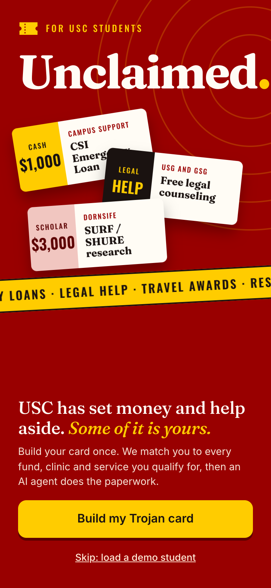
1/17 Welcome. USC has set money and help aside; some of it is yours.
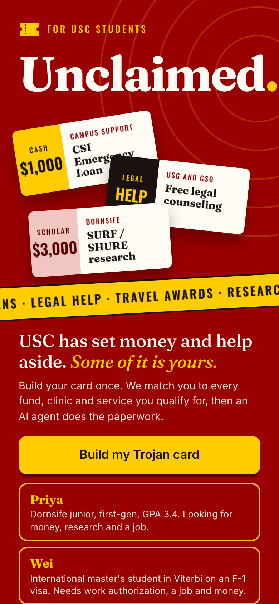
2/17 Five demo students, loaded through the same API as a real card.
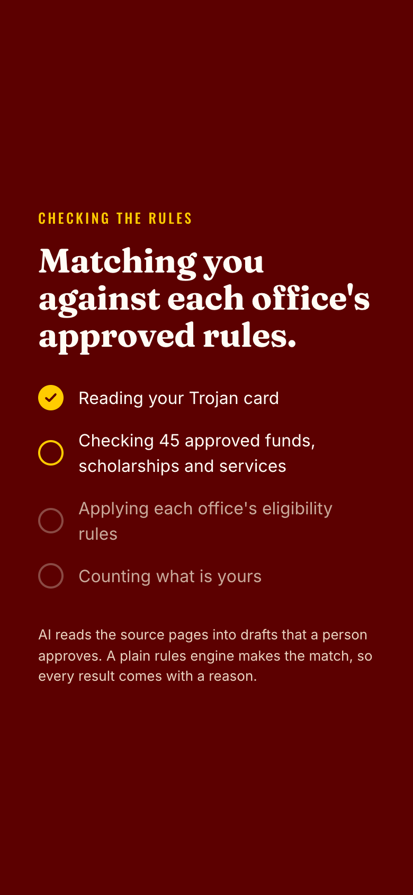
3/17 Priya, a Dornsife junior: the rules engine checks every approved resource.
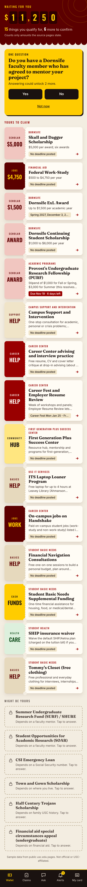
4/17 Her wallet. PURF is due soon, so it is marked urgent. One question could unlock two more.
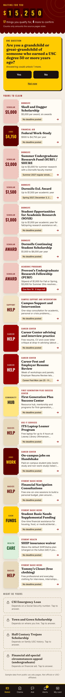
5/17 She has a faculty mentor: SOAR and SURF flip from maybe to yes. Nothing was guessed.
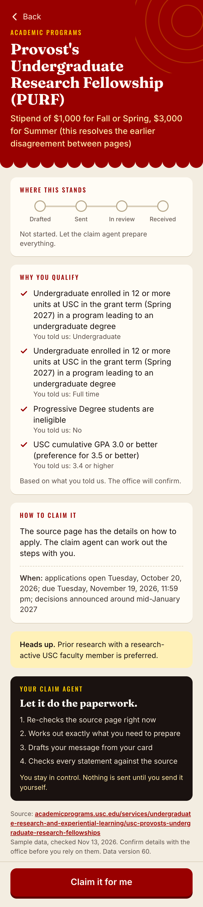
6/17 PURF ticket: why she qualifies (with what she told us), how to claim, and the source page.
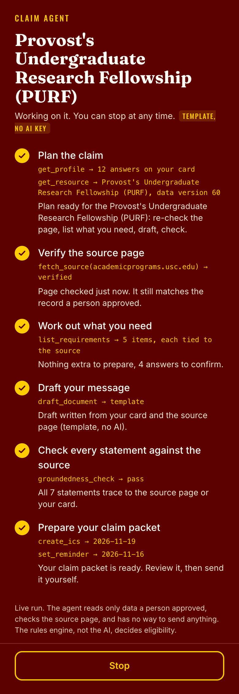
7/17 The claim agent, live: re-checks the page, lists what she needs, drafts, and checks every statement.
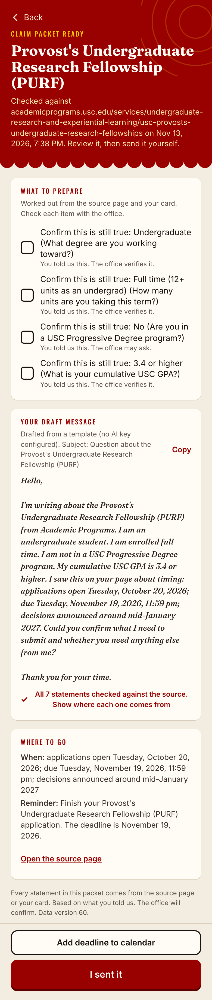
8/17 Claim packet: what to prepare, a draft where every sentence traces to the source, and a calendar file.
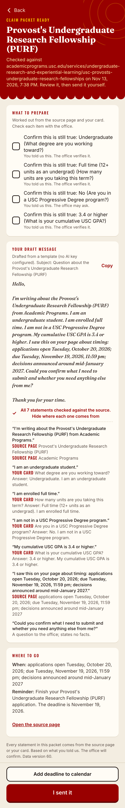
9/17 Where each statement comes from: the source page or her own card.
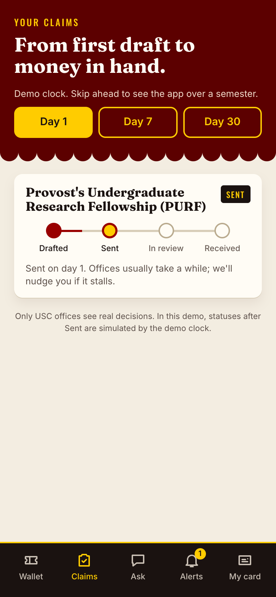
10/17 She sends it herself. Unclaimed never sends anything.
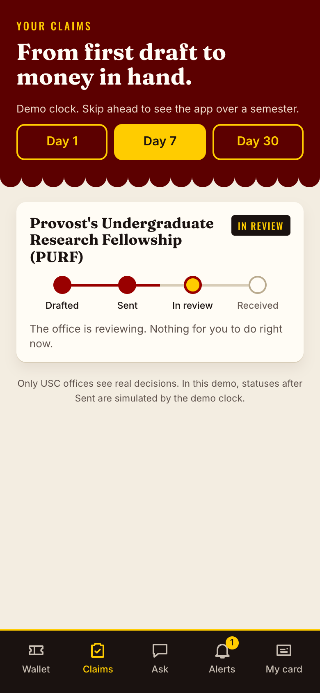
11/17 Demo clock, Day 7: in review (simulated, and labelled so).
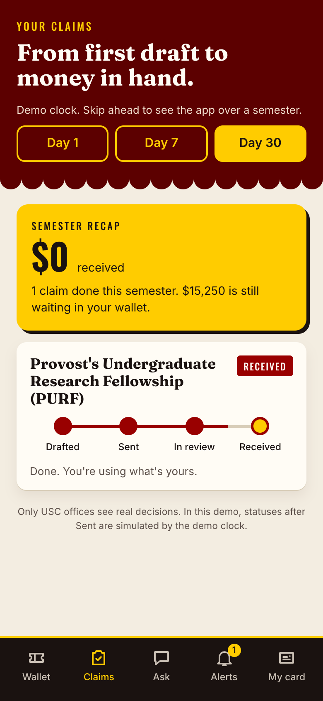
12/17 Day 30: received. Only USC offices see real decisions; in the app, the student reports the outcome.
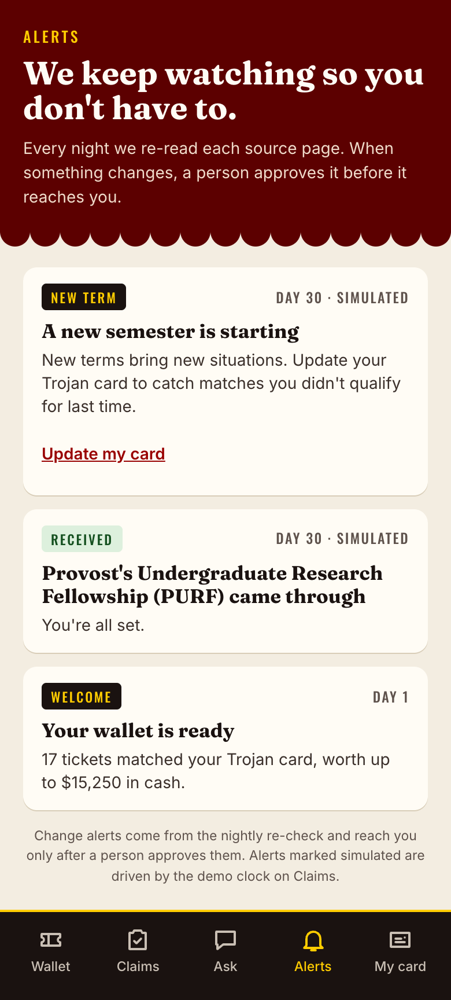
13/17 Alerts: reminders and follow-ups. Source changes reach students only after a person approves them.
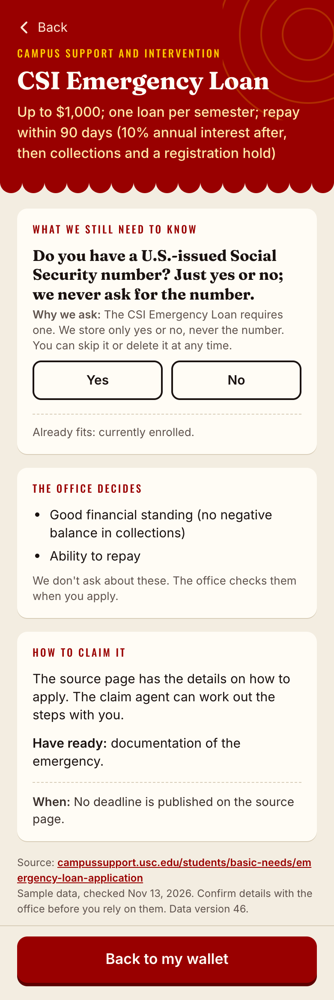
14/17 Wei, an international student: the emergency loan is a maybe. Unknown is never treated as no.
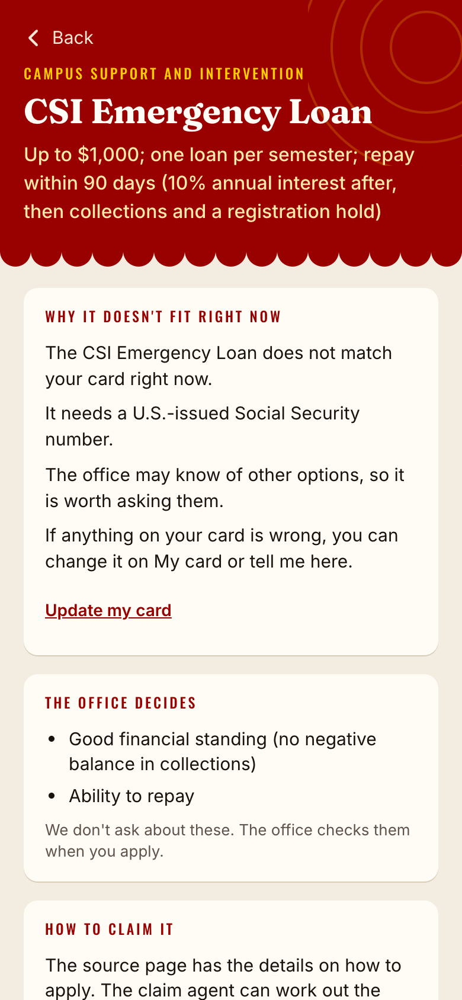
15/17 He has no U.S. Social Security number: only now does it say it doesn’t fit. Unknown was never treated as no.
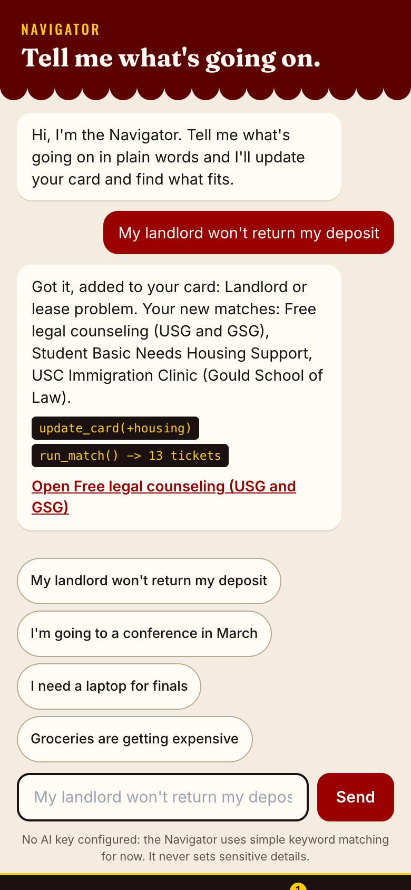
16/17 The Navigator maps plain words to the card with tool calls, shown as chips.
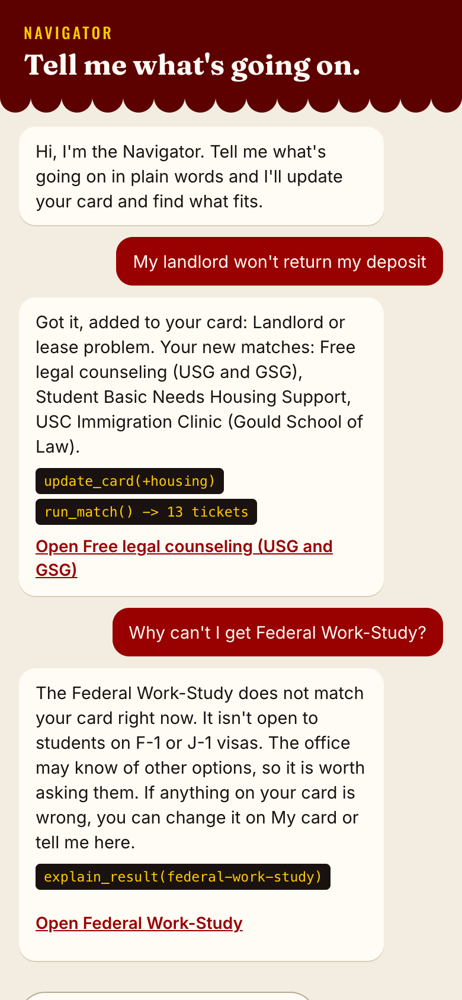
17/17 Ask why not: the rules engine's reason, in plain words and politely, with a pointer to the office.